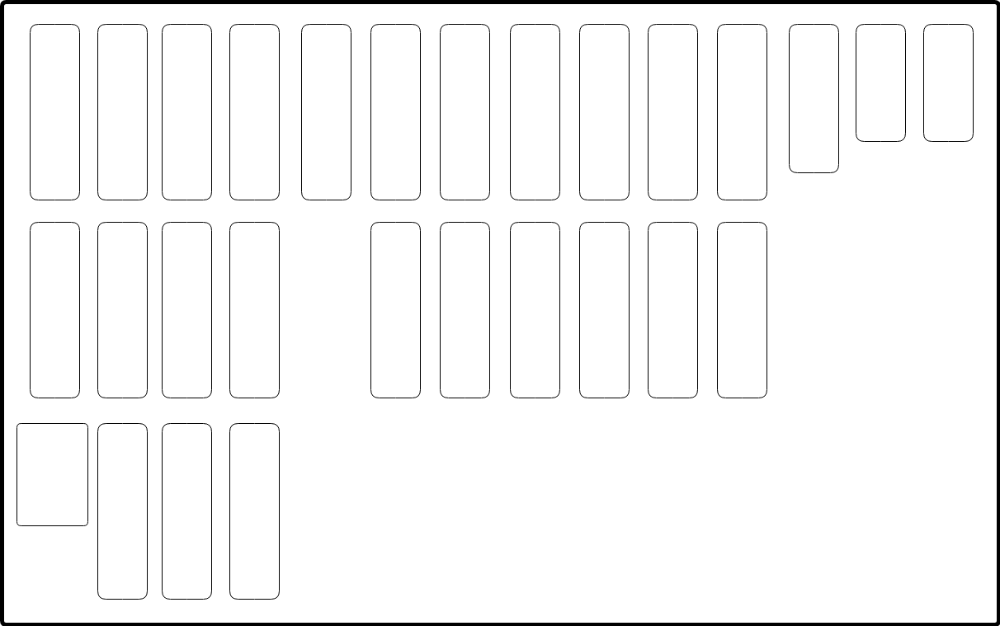
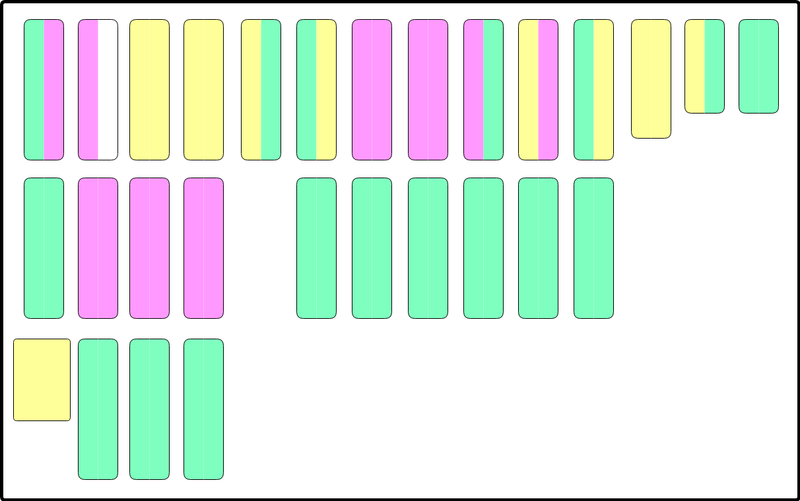
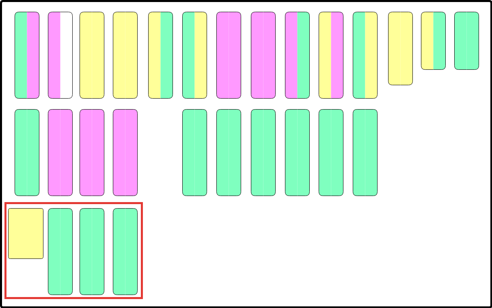
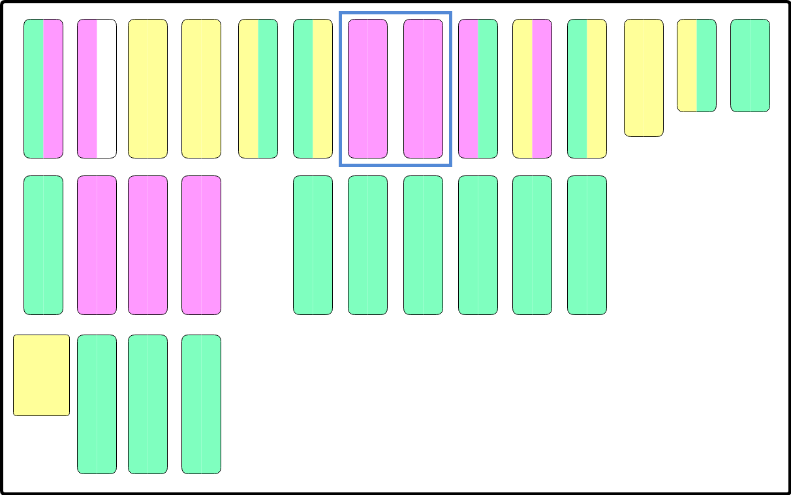
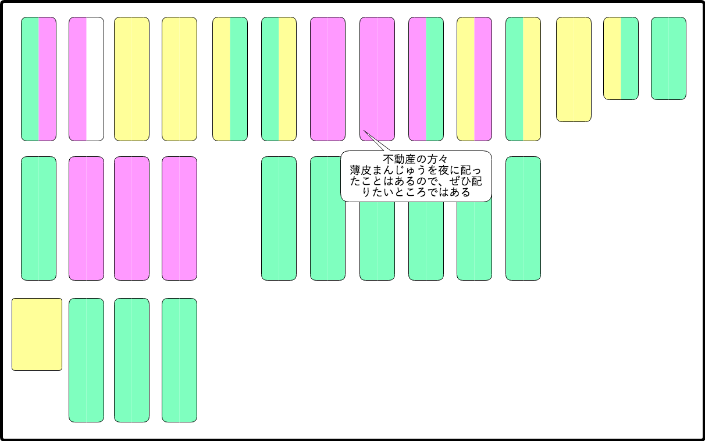

みなさん
まずは、この図をご覧ください

何の図か、分かりましたか？
次に、この図を見てください。

何の図かわかりましたか？
実は先程の図は席次表で、ポイフルを配った所の色分けしてみた図になっています
緑 -> レギュラーで配っている
黄 -> たまにしか配れていない、配れていない人がいる、結構配れないときがある
赤 -> 未だ配ったことがない
ということで、本日はこの場を私的に使わせてもらって恐縮ですが、、、
をさせていただきます
※ 今週おやすみさせていただいております
@yutaka.kanno
まずは、先程の図をもう一度

三行で言うと


三行で
活動報告は以上
なんですが、配っていて感じたことの感想を少しだけ話して終わりにさせてください
ちなみに前の会社では、「ミルフルッツを配っていました」
来月からまたよろしくお願いします
ご静聴ありがとうございました